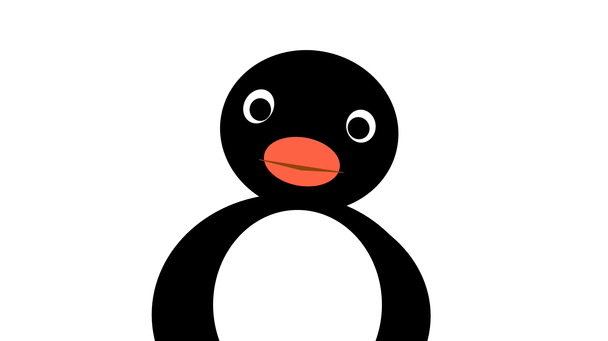
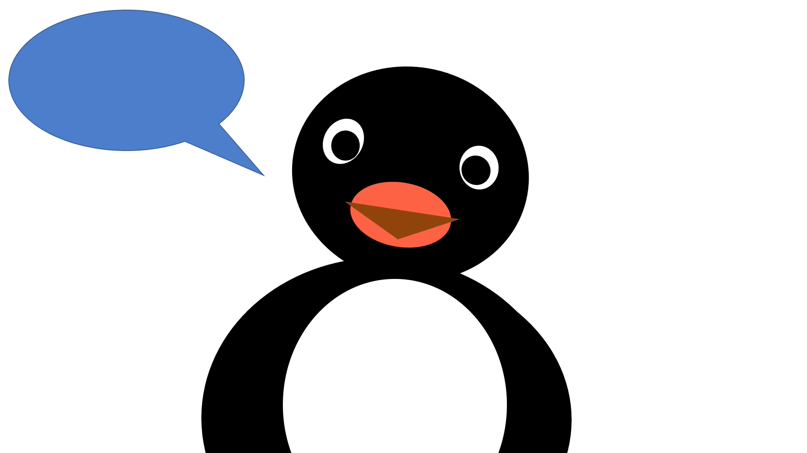
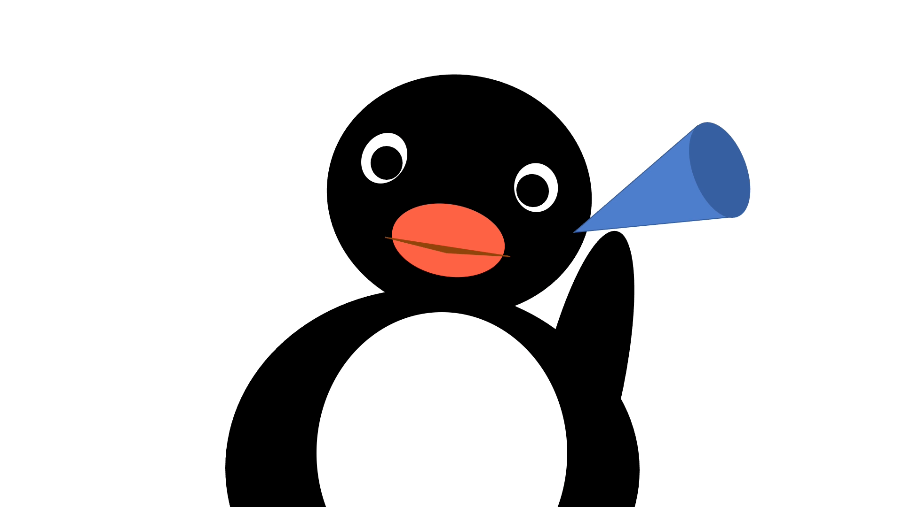

<!DOCTYPE html>
<html>
  <head>
    <title>My experiment</title>
    <!-- <meta name="viewport" content="user-scalable=no"> -->
    <script src="https://unpkg.com/jspsych@7.3.4"></script>
    <script src="https://unpkg.com/@jspsych/plugin-external-html@1.1.3"></script>
    <script src="https://unpkg.com/@jspsych/plugin-audio-slider-response@1.1.3"></script>
    <script src="https://unpkg.com/@jspsych/extension-record-video@1.1.0"></script>
    <script src="https://unpkg.com/@jspsych/plugin-html-video-response@1.0.2"></script>

    <script src="https://unpkg.com/@jspsych/plugin-initialize-camera@2.0.0"></script>
    <script src="https://unpkg.com/@jspsych/plugin-html-slider-response@1.1.3"></script>
    <script src="https://unpkg.com/@jspsych/plugin-audio-keyboard-response@1.1.3"></script>
    <script src="https://unpkg.com/@jspsych/plugin-html-audio-response@1.0.3"></script>
    <script src="https://unpkg.com/@jspsych/plugin-html-keyboard-response@1.1.3"></script>
    <script src="https://unpkg.com/@jspsych/plugin-html-button-response@1.2.0"></script>
    <script src="https://unpkg.com/@jspsych/plugin-audio-button-response@1.2.0"></script>
    <script src="https://unpkg.com/@jspsych/plugin-video-button-response@1.2.0"></script>
    <script src="https://unpkg.com/@jspsych/plugin-survey-html-form@1.0.3"></script>
    <script src="https://unpkg.com/@jspsych/plugin-preload@1.1.3"></script>
    <script src="https://unpkg.com/@jspsych/plugin-call-function@1.1.3"></script>
    <script src="https://unpkg.com/@jspsych/plugin-browser-check@1.0.3"></script>
    <script src="https://unpkg.com/@jspsych/plugin-fullscreen@2.0.0"></script>
    <script src="https://unpkg.com/@jspsych/plugin-initialize-microphone@1.0.3"></script>

    <link href="https://unpkg.com/jspsych@7.3.4/css/jspsych.css" rel="stylesheet" type="text/css" />

    <script src="https://nyc3.digitaloceanspaces.com/experiments.childlanglab/childlanglabClient.js"></script>

    <script src="params.js"></script>
  </head>
  <body>
  </body>
  <script>

    childlanglabClient.init();

    var jsPsych = initJsPsych(
        {
            show_progress_bar: true,
            auto_update_progress_bar: false,
            extensions: [
                    {
                        type: jsPsychExtensionRecordVideo, 
                    }  // You can handle the saved video data here}
                ],
            on_interaction_data_update: function(data) {
                console.log(JSON.stringify(data));
                jsPsych.data.get().addToLast({browser_event: data});
            },
            on_finish: function() {
                jsPsych.data.displayData();
            }
        }
    );


    var TRIAL_N = 0;
    var URL_CONDITION = jsPsych.data.getURLVariable('condition'); // get condition from url \
    var CONDITION = get_condition(URL_CONDITION);
    var CONDITION_PARAMS = get_params(CONDITION); 
    var RANDOM_LIST = `list${jsPsych.randomization.randomInt(1,2)}`; // get random list 
    var ALERT = "If you wish to participate, you must check the box next to the statement 'I agree to participate in this study.'"
    
    var consent = {
        type: jsPsychExternalHtml, 
        url: "consent.html", 
        cont_btn: "start", 
        check_fn: function(){
           if (document.getElementById('consent_checkbox').checked){
                return true
           } else {
                alert(ALERT);
                return false
           }
        }
    }; 


    var browser_check = {
        type: jsPsychBrowserCheck
    };

    var fullscreen_check = {
        type: jsPsychFullscreen,
        fullscreen_mode: true
    }

    var init_microphone = {
        timeline: [
            {type: jsPsychInitializeMicrophone}
        ],
        conditional_function: function() {
            if (CONDITION == 'SICR'){
                return true
            } else {
                return false
            }
        }
        
    };

    var init_camera = {
        timeline: [
            {
                type: jsPsychInitializeCamera, 
                include_audio: true, 
                mime_type: 'video/mp4; codecs="avc1.42E01E, mp4a.40.2"'
            }
        ],
        conditional_function: function() {
            if (CONDITION == 'SICR'){
                return true
            } else {
                return false
            }
        }
    }; 

    var saveRecording = {
        type: jsPsychCallFunction, 
        async: true, 
        func: function(done){
            const video_url = jsPsych.data.get().last(1).values()[0].video_url;
            const trial_index = jsPsych.data.get().last(1).values()[0].trial_index;
            var base64Data = '...';

            fetch(video_url)
                .then(response => {return response.blob()})
                .then(blob => {
                    const reader = new FileReader();
                    reader.onloadend = function() {
                        if (reader.result) {
                            console.log('FileReader result:', reader.result);  
                            if (typeof reader.result === 'string' && reader.result.startsWith('data:')) {
                                base64Data = reader.result.split(',')[1];  // Extract the base64 string
                                const recording = childlanglabClient.uploadRecording(base64Data, trial_index )
                                console.log(recording)
                                done(recording)
                            } else {
                                console.error('Unexpected FileReader result format:', reader.result);
                            }
                        } else {
                            console.error("FileReader result is empty.");
                        }
                    };
                    reader.readAsDataURL(blob);  // This is where the Blob is passed to FileReader
                })
                .catch(error => {
                    console.error('Error fetching or processing the Blob URL:', error);
                });
    
        }
    }

    function get_condition(condition){
        let conditions = ["AFC", "RATING", "SICR"];
        let random_condition = conditions[jsPsych.randomization.randomInt(0,2)]

        if (condition == 'random'){
            return random_condition
        } else {
            return condition
        }
    };

    function get_params(condition){
        console.log(PARAMS.conditions)
        console.log(PARAMS.conditions[condition])
        return PARAMS.conditions[condition]; 

    }

    var get_instructions = function(these_instructions) {
        console.log(these_instructions)
        var instructions = {
            type: jsPsychHtmlButtonResponse,
            stimulus: function() {
                return `<div style="max-width: 800px; text-align: left"><p>${these_instructions}</p></div>`},
            prompt: "<p></p>",
            choices: ["Continue"],
            button_html: function(){
                return [`<button class="jspsych-btn">%choice%</button>`]
            }
        }

        return instructions
        
    }; 

    var thanks = {
        type: jsPsychHtmlButtonResponse,
        stimulus: `<p><strong>Thank you!<strong></p><p>The experiment is now finished.</p>`,
        prompt: "Press the button to complete the experiment.",
        choices: ["Completion code"],
        button_html: [`<button class="jspsych-btn">%choice%</button>`]
    };

    var sendData = {
        type: jsPsychCallFunction,
        async: true,
        func: function (done) {
            let data = jsPsych.data.get().json();
            childlanglabClient.sendData(data);
            done("Sent data object to childlanglab-api")
            
        },
    };

    var fixation = {
        type: jsPsychHtmlKeyboardResponse, 
        stimulus: "+", 
        choices: "NO_KEYS", 
        response_ends_trial: false, 
        trial_duration: 1000
    };

    var test_rating = {
        timeline: [
        {
                type: jsPsychAudioSliderResponse,
                stimulus: "sounds/silence.wav",
                labels: ['⛔️ Not at all like a penguin word', 'Definitely a penguin word  ✅'],
                on_load: function(){
                    let display_element = document.querySelector('#jspsych-content');
                    let image = document.createElement('img');
                    image.src = "images/pingu-wait.png";  // Replace with your actual image URL
                    image.style.width = '450px';
                    display_element.prepend(image);
                },
                response_ends_trial: false,
                response_allowed_while_playing: false,
                trial_duration: 1000

            }, 
            {
                type: jsPsychAudioSliderResponse,
                stimulus: function(){
                    let sound = `sounds/${jsPsych.timelineVariable('sound1')}-resampled.wav`
                    return sound
                },
                labels: ['⛔️ Not at all like a penguin word', 'Definitely a penguin word  ✅'],
                on_load: function(){
                    let display_element = document.querySelector('#jspsych-content');
                    let image = document.createElement('img');
                    image.src = "images/pingu-option-blue.png";  // Replace with your actual image URL
                    image.style.width = '450px';
                    display_element.prepend(image);
                },
                response_allowed_while_playing: false,
                require_movement: true, 
                on_finish: function(data){
                    data.trial_n = TRIAL_N += 1;
                    data.selected_condition = CONDITION; 
                    data.random_list = RANDOM_LIST;
                    let proportion_complete = jsPsych.getProgressBarCompleted();
                    jsPsych.setProgressBar(proportion_complete += 0.01)
                   // data.choices = this.choices;
                    // data.button_pressed = this.choices[data.response]; 


                },
                data: {
                    sound1: jsPsych.timelineVariable('sound1'),
                    category1: jsPsych.timelineVariable('category1'),
                    phase: "test",
                    //sound2: jsPsych.timelineVariable('sound2'),
                    //category2: jsPsych.timelineVariable('category2'),
                }
            }
        ], 
        timeline_variables: PARAMS.conditions.RATING.test[RANDOM_LIST],
        repetitions: 1
    }

    var test_afc = {
        timeline: [
            {
                type: jsPsychHtmlButtonResponse,
                stimulus: "",
                prompt: '<p>Which option sounds more like a word in the penguin language?</p>',
                response_allowed_while_playing: false,
                choices: ["images/pingu-wait.png", "images/pingu-wait.png"],
                button_html: [
                    `<button class="jspsych-btn" style="opacity: 0.2"> </button>`, 
                    `<button class="jspsych-btn" style="opacity: 0.2"> </button>`
                ], 
                trial_duration: 1000,
                trial_ends_after_audio: true,
            }, 
            {
                type: jsPsychAudioButtonResponse,
                stimulus: function(){
                    let sound = `sounds/${jsPsych.timelineVariable('sound1')}-resampled.wav`
                    return sound
                },
                prompt: '<p>Which option sounds more like a word in the penguin language?</p>',
                response_allowed_while_playing: false,
                choices: ["images/pingu-option-blue.png", "images/pingu-wait.png"],
                button_html: [
                    `<button class="jspsych-btn"> </button>`, 
                    `<button class="jspsych-btn" style="opacity: 0.2"> </button>`
                ], 
                trial_ends_after_audio: true, 
            }, 
            {
                type: jsPsychAudioButtonResponse,
                stimulus: function(){
                    let sound = `sounds/${jsPsych.timelineVariable('sound2')}-resampled.wav`
                    return sound
                },
                prompt: '<p>Which option sounds more like a word in the penguin language?</p>',
                response_allowed_while_playing: false,
                choices: ["images/pingu-option-blue.png", "images/pingu-option-purple.png"],
                button_html: [
                    `<button class="jspsych-btn" style="opacity: 0.2"> </button>`, 
                    `<button class="jspsych-btn"> </button>`
                ], 
                trial_ends_after_audio: true

            }, 
           
            {
                type: jsPsychHtmlButtonResponse,
                stimulus: "",
                prompt: '<p>Which option sounds more like a word in the penguin language?</p>',
                choices: ["images/pingu-option-blue.png", "images/pingu-option-purple.png"],
                button_html: [
                    `<button class="jspsych-btn" > </button>`, 
                    `<button class="jspsych-btn" > </button>`
                ], 
                response_ends_trial: true, 
                on_finish: function(data){
                    data.trial_n = TRIAL_N += 1;
                    data.selected_condition = CONDITION; 
                    data.random_list = RANDOM_LIST;
                    data.choices = this.choices;
                    data.button_pressed = this.choices[data.response]; 
                    data.choice_sound = [jsPsych.timelineVariable('sound1'), jsPsych.timelineVariable('sound2')][data.response];
                    data.choice_category = [jsPsych.timelineVariable('category1'), jsPsych.timelineVariable('category2')][data.response];
                    let proportion_complete = jsPsych.getProgressBarCompleted();
                    jsPsych.setProgressBar(proportion_complete += 0.01)
                },
                data: {
                    sound1: jsPsych.timelineVariable('sound1'),
                    category1: jsPsych.timelineVariable('category1'),
                    sound2: jsPsych.timelineVariable('sound2'),
                    category2: jsPsych.timelineVariable('category2'),
                    phase: "test",
                }
            }, 

            fixation
        ], 
        timeline_variables: PARAMS.conditions.AFC.test[RANDOM_LIST],
        repetitions: 1
    }; 

    var test_sicr = {
        timeline: [
            {
                type: jsPsychHtmlKeyboardResponse,
                stimulus: "",
                choices: "NO_KEYS",          
                trial_duration: 1000, 
                post_trial_gap: 0, 
                prompt: '<br><br><button class="jspsych-btn" disabled>Next</button><br>',
            },
            {
                type: jsPsychAudioKeyboardResponse,
                stimulus: function(){
                    let sound = `sounds/${jsPsych.timelineVariable('sound1')}-resampled.wav`
                    return sound
                },
                choices: "NO_KEYS",
                response_allowed_while_playing: false,
                trial_ends_after_audio: true, 
                prompt: '<br><br><button class="jspsych-btn" disabled>Next</button>',
                post_trial_gap: 0,
            },
            {
                type: jsPsychAudioKeyboardResponse,
                stimulus: function(){
                    let sound = `sounds/${jsPsych.timelineVariable('sound2')}-resampled.wav`
                    return sound
                },
                prompt: '<br><br><button class="jspsych-btn" disabled>Next</button>',
                response_allowed_while_playing: false,
                choices: "NO_KEYS",
                trial_ends_after_audio: true, 
                post_trial_gap: 0
            },
            {
                type: jsPsychAudioKeyboardResponse,
                stimulus: function(){
                    let sound = `sounds/${jsPsych.timelineVariable('sound3')}-resampled.wav`
                    return sound
                },
                prompt: '<br><br><button class="jspsych-btn" disabled>Next</button>',
                response_allowed_while_playing: false,
                choices: "NO_KEYS",
                trial_ends_after_audio: true, 
                post_trial_gap: 0
            },    
            {
                type: jsPsychHtmlVideoResponse,
                stimulus: '',
                recording_duration: 15000,
                show_done_button: true, 
                done_button_label: 'Next',
                save_video_url:true, 
                on_finish: function(){
                    let proportion_complete = jsPsych.getProgressBarCompleted();
                    jsPsych.setProgressBar(proportion_complete += 0.01)
                }
        },   
        saveRecording,    
            // {
            //     type: jsPsychHtmlButtonResponse,
            //     stimulus: '<br>',
            //     prompt: '<p>Say exactly what Pingu said when she is ready to listen.</p>',
            //     choices: ['Next'],
            //     trial_duration: 15000,
            //     extensions: [
            //         {
            //             type: jsPsychExtensionRecordVideo, 
            //         }  // You can handle the saved video data here}
            //     ],
            //     on_finish: function(data){
            //         let proportion_complete = jsPsych.getProgressBarCompleted();
            //         console.log(proportion_complete);
            //         jsPsych.setProgressBar(proportion_complete += 0.22677777)
            //         console.log(data.record_video_data)
            //         console.log("object", data.record_video_data.base64)
            //         console.log("split", data.record_video_data.split(',')[1])
            //         let recording = childlanglabClient.uploadRecording(data.record_video_data, data.trial_index); 
            //         console.log(window)
            //         //console.log(chunks)
            //         //console.log(videoBlob)
            //     }
            // }, 
            fixation
        ], 
        timeline_variables: PARAMS.conditions.SICR.test[RANDOM_LIST],
        repetitions: 1
    };
    

    var exposure = {
        timeline: [
            { // take a break after each exposure set 
                type: jsPsychAudioKeyboardResponse,
                stimulus: jsPsych.timelineVariable('sound'),
                prompt: function() {
                return `<video id="pingu" width="100%" height="auto" autoplay muted>
                    <source src=${jsPsych.timelineVariable('video')} type="video/mp4">
                    Your browser does not support the video tag.
                </video>
                <p></p>`
                },
                choices: " ",
                response_ends_trial: false,
                trial_ends_after_audio: true,
                post_trial_gap: 1000,
            }, 
            { // take a break after each exposure set 
                type: jsPsychHtmlButtonResponse,
                stimulus: "",
                prompt: "What was pingu doing in the video you watched?",
                choices: function() {
                    let choices = [jsPsych.timelineVariable('correct'), jsPsych.timelineVariable('foil')]; 
                    let shuffled_choices = jsPsych.randomization.shuffle(choices); 
                    return shuffled_choices; 
                }, 
                button_html: [
                    `<button class="jspsych-btn"> </button>`, 
                    `<button class="jspsych-btn"> </button>`
                ], 
                post_trial_gap: 1000,
                on_finish: function(){
                    let proportion_complete = jsPsych.getProgressBarCompleted();
                    console.log(proportion_complete);
                    jsPsych.setProgressBar(proportion_complete += 0.22677777)
                }

            }
        ],
        timeline_variables: [
            {sound: 'sounds/block-1-stim.mp3', video: 'video/Pingu_Block1.mp4', correct: "images/block-1-comp-c.png", foil: "images/block-1-comp-f.png"},
            {sound: 'sounds/block-2-stim.mp3', video: 'video/Pingu_Block2.mp4', correct: "images/block-2-comp-c.png", foil: "images/block-2-comp-f.png"},
            {sound: 'sounds/block-3-stim.mp3', video: 'video/Pingu_Block3.mp4', correct: "images/block-3-comp-c.png", foil: "images/block-3-comp-f.png"}
        ],
        repetitions: 1,     
        randomize_order: false
    }

    var exit_survey = {
        type: jsPsychSurveyHtmlForm,
        preamble: function() {
                return `
                <div style="text-align: left; max-width: 800px">
                <h3>Exit survey</h3>
                <p>Thank you for participating in our study! Before you go, we have a few final questions. 
                Please answer honestly. Your compensation will NOT be affected by your answer.</p>
                </div>`
        }, 
            html: `
            <div style="text-align: left; max-width: 800px">
                <p>(1) Have you seen Pingu before?</p>
                <div >
                    <label><input type="radio" name="seen_pingu" value="yes" required> yes</label><br>
                    <label><input type="radio" name="seen_pingu" value="no" required> no</label><br>
                    <label><input type="radio" name="seen_pingu" value="not sure" required> not sure</label><br>
                    <p id="error-msg" style="color:red; display:none;" required>Please select an option!</p>
                </div>
                <p>(2) Have you participated in any experiments with similar sounds or videos in the past 3 months?</p>
                <div >
                    <label><input type="radio" name="similar_experiment" value="yes" required> yes</label><br>
                    <label><input type="radio" name="similar_experiment" value="no" required> no</label><br>
                    <label><input type="radio" name="similar_experiment" value="not sure" required> not sure</label><br>
                    <p id="error-msg" style="color:red; display:none;" required>Please select an option!</p>
                </div>
                <p>(3) How distracted were you during the experiment?</p>
                <div style="display: flex; align-items: center; justify-content: space-between; width: 800px;">
                <label style="font-size: 14px;">I paid close attention the whole time</label>
                <input type="range" style="flex: 1; margin: 0 10px;" min="0" max="100">
                <label style="font-size: 14px;">I was very distracted</label>
                </div>
            </div>
            `,
            button_label: "Submit",
    save_timeline_variables: true
    }

    var preload = {
        type: jsPsychPreload,
        audio: PARAMS.preload.audio,
        images: PARAMS.preload.images,
        videos: PARAMS.preload.videos,
        show_detailed_errors: true
    }

    var get_test = function(condition) {

        switch (condition) {
            case 'AFC':
                return test_afc
            case 'RATING':
                return test_rating
            case 'SICR':
                return test_sicr
            default:
                break;
        }
    }

    var timeline = [
        consent,
        browser_check,
        fullscreen_check,
        preload,
        get_instructions(CONDITION_PARAMS.instructions.exposure), 
        exposure,
        get_instructions(CONDITION_PARAMS.instructions.test),
        init_camera, // this is a conditional function that only runs for SICR
        init_microphone,
        get_test(CONDITION),
        exit_survey,
        sendData,
        thanks
    ]

    jsPsych.run(timeline);


  </script>
</html>
